📌 進度一眼看
🗓 17 天一眼看(點日期直達當天)
色塊=地區:奧斯陸・Tromsø・Bodø・Lofoten・飛行/返程(與逐日卡左框同色系); 格底綠線=守極光夜
你的機票(已訂)+ 北京轉機
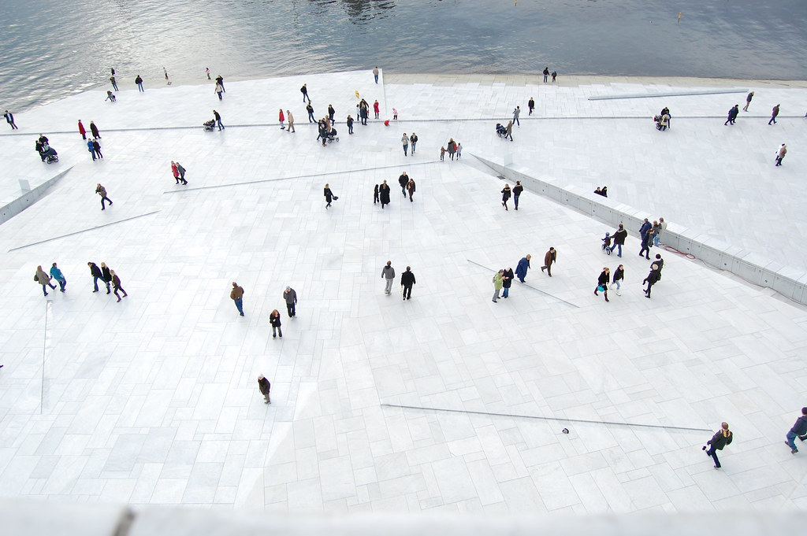
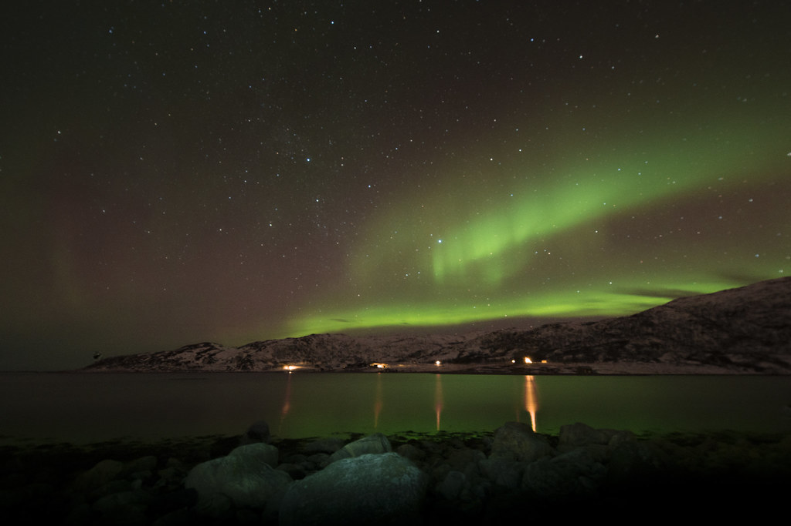
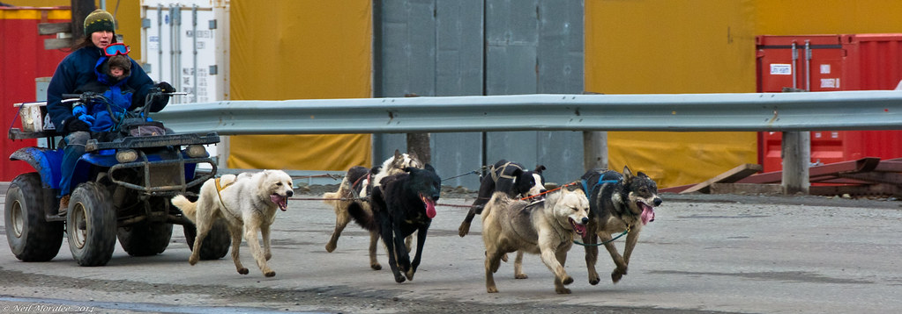

| 航段 | 航班 | 日期 | 時刻(以海航官網最終確認) |
|---|---|---|---|
| 台北 TPE → 北京 PEK | HU7988 | 2/26 五 | 13:05 → 16:30(約 3h25m・依行程單) |
| 北京 PEK → 奧斯陸 OSL | HU769 | 2/27 六 | 02:55 → 06:00 抵 OSL(北京 T2,約 10h) ↑ 北京過夜候機約 10 小時 |
| 奧斯陸 OSL → 北京 PEK | HU770 | 3/13 六→14 日 | 12:30 → 翌日 04:30 抵北京(紅眼,約 9h) |
| 北京 PEK → 台北 TPE | HU7987 | 3/14 日 | 08:00 → 11:10 抵台北(約 3h10m;北京轉機約 3.5h) |
📆 把行程加入手機行事曆(.ics:9 航段+9 段住宿+5 個關鍵提醒) ── 兩人手機各匯入一次;航班含準確時刻、住宿為全天事件(備註含入住方式與確認碼),仍以官方最終確認為準
台南 → 桃園機場(當天早上北上)
- HU7988 為 13:05 起飛(下午)→ 2/26 當天早上北上完全來得及。 台南站(歸仁)→ 桃園站約 1.5 小時 → 6 號出口到 A18 → 機場捷運到 T2(約 12–16 分;依行程單海航去回程皆 T2)。
- 建議搭約 07:00–07:30 的高鐵北上 → 約 10:00 前抵桃機(13:05 起飛、國際線提前 3 小時報到),預留高鐵誤點緩衝;比「剛好趕上」再早一班車最穩。
- 行李直掛奧斯陸 ── 北上途中只需顧好登機箱+護照+台胞證,落地 OSL 才提領大行李,輕鬆許多。
- 回程很從容:3/14 上午 11:10 抵桃園 → 機捷 → 高鐵回台南,白天就到家,不必擔心末班車。
全程逐日(每天附 A/B/C 方案)
奧斯陸 2 + Tromsø 4(極光保底)+ Bodø 1 + Lofoten 6 + 奧斯陸 1。方案僅供選擇,不替你們拍板。
只有當你們把「回程零風險」擺第一、或更想以「在 Tromsø 追到極光」當高潮收尾、不在乎在小屋收尾時,才考慮翻成先 Lofoten。
🛏 全程 14 晚住宿一覽(13 晚已訂・3/1 重訂中;訂房明細見各段專區)
| 日期 | 地點 | 住宿 | 狀態・金額(2人) |
|---|---|---|---|
| 2/27(六)–2/28(日) | 奧斯陸 | Scandic Vulkan 📍 | ✅ NT$7,338(2 晚・飯店確認雙人床) |
| 3/1(一) | Tromsø(地點待定) | 原東北小屋被業者取消(電力問題)→ 重訂中 | ⏳ 重訂中(1 晚整套約 NT$5,300–8,700・2027 實際報價區間) |
| 3/2(二) | Sommarøy | Prestvikvegen 📍 | ✅ NT$4,895 |
| 3/3(三)–3/4(四) | Tromsø 市中心 | Fiskergata 6 📍 | ✅ NT$7,128(2 晚) |
| 3/5(五) | Bodø | Home Hotel Grand Bodø 📍 | ✅ NT$5,049 |
| 3/6(六)–3/7(日) | Ramberg | Mørkveden 📍 | ✅ NT$10,611(2 晚) |
| 3/8(一)–3/10(三) | Reine | Reine cabin(46 Kirkeveien)📍 | ✅ NT$27,661(3 晚) |
| 3/11(四) | Ballstad | Hemmingodden Lodge 📍 | ✅ NT$8,750 |
| 3/12(五) | 奧斯陸(緩衝夜) | Scandic Vulkan(續住・標準大床房)📍 | ✅ NT$4,426(含 3/13 早餐) |
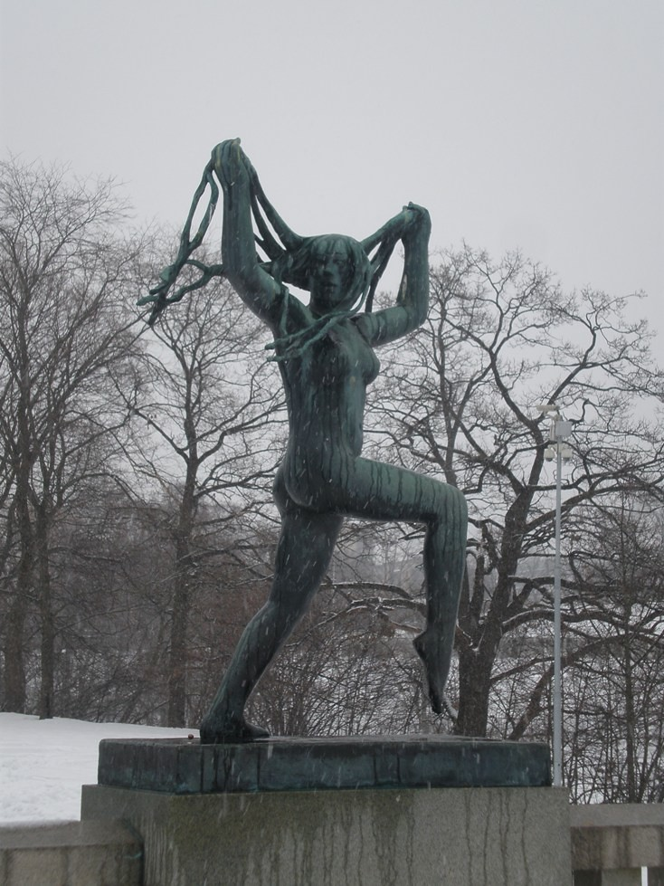
🏛 奧斯陸抵達(2/27–2/28,2 晚)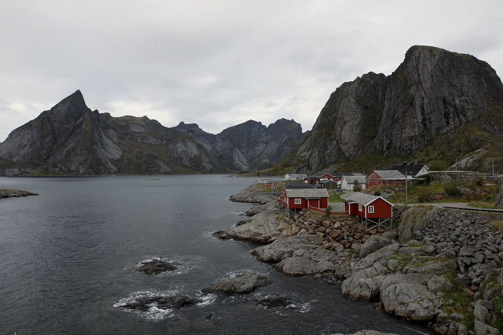
🎣 西 Lofoten 四村住(3/6–3/11,6 晚)奧斯陸在地・逐日(2/27–3/1+3/12–3/13)
抵達日睡飽調時差、週日看博物館(A/B/C 由你們選)、緩衝夜採買伴手禮;住 Scandic Vulkan(樓下 Mathallen)。
🏡 住宿(含實際價格・2 人合計)
| 日期 | 住宿 | 價格(2 人) |
|---|---|---|
| 2/27–2/28 | Scandic Vulkan(Vulkan/Grünerløkka,2 晚)📍 | NT$7,338 |
| 3/12 | Scandic Vulkan(續住・緩衝夜)📍 | NT$4,426 |
| 合計 | 3 晚 | NT$11,764 |
平均約 NT$3,921/晚(2 人);三晚同一間、行李不用搬,樓下就是 Mathallen 美食街。
🔑 入住方式(Trip.com 入住憑證已確認):地址 Maridalsveien 13A;16:00 後入住・退房 12:00 前,早到可請櫃台寄放行李(特殊需求已提交;飯店未明確回覆,概值)。2/27–28 憑證顯示「標準雙床房」→ 出示飯店確認雙人床的 email,含 2/28+3/1 早餐;3/12 為標準大床房、含 3/13 早餐,⚠ 憑證旅客僅掛 CHEN PINJU → 由她出護照辦入住、不可退改。早餐時段:平日 06:30–09:30/週末 07:30–10:30(概值)。確認碼:2/27–28 1616332750428777/3/12 1616332846574172。電話 +47-21057100。
| 時間 | 行程 |
|---|---|
| 06:00 | HU769 落地 OSL(國際線)→ 申根入境:EES 首次入境建檔指紋+臉部照片+提領行李;清晨是跨洲航班尖峰,出關抓約 1–1.5 小時(概值) |
| 07:15–07:45 | 火車進市區到 Oslo S📍:Flytoget(約 20 分、~NOK 276、閘門刷卡)或 Vy 區間車(約 25 分、約 NOK 130 上下・以 App 試算為準) |
| 08:00 | Scandic Vulkan 寄放行李📍(Oslo S 搭 34 號公車 3 站/計程車;正式入住 16:00 後) |
| 08:15–10:00 | 早餐+暖身:樓下 Mathallen 週六 10:00 才開 → 先走 8–10 分到 Godt Brød Grünerløkka📍(有機麵包坊・週六約 07:30 開・概值)吃早餐,沿 Akerselva 河畔慢慢走回 |
| 10:00–13:00 | Mathallen 開門(週六 10:00–20:00)逛一圈+早午餐;累就回飯店大廳休息(憑證寫 16:00 後才能入住,提早進房不保證;想保證可寫信請飯店提早安排或問付費 early check-in)── 今天首要任務是把時差睡回來 |
| 14:00–17:00 | 下午輕鬆場(A/B/C 擇一,見下) |
| ~17:39 | 日落(藍調 ~18:05–18:35・概值)→ 傍晚回 Vulkan;順路超市買水果/零食/隔日備品(⚠ 明天週日超市關門,今天六是最後正常採買日) |
| 19:00 | 早點晚餐(Mathallen 或 Grünerløkka 一帶)、早睡調時差 |
| 時間 | 行程(骨架;上午/下午場放哪個方案由你們選) |
|---|---|
| 08:30–09:30 | 飯店早餐(房價含早)、整裝(想開門就進:07:30 吃早餐、約 09:15 出門;照 09:30 吃完再出門,B/C 案約 10:30 才入館) |
| 10:00–12:30 | 上午場:三案的場館週日都 10:00 開門 |
| 12:30–14:00 | 午餐:Mathallen 週日 11:00–18:00 有開(A 案順路;B 案在 Bygdøy 自帶輕食或回市區再吃;C 案從 Holmenkollen 回 Mathallen 不順路,建議改 Majorstuen 一帶) |
| 14:00–17:00 | 下午場(注意各館關門時間:國家博物館/Fram/Kon-Tiki 17:00、Holmenkollen 16:00) |
| ~17:41 | 日落(藍調 ~18:05–18:40・概值)→ 歌劇院屋頂/海港藍調散步(免費戶外、不受週日影響) |
| 19:00 | 晚餐 → 回飯店整理行李+SAS App 線上報到(明早 10:00 飛 Tromsø、08:30 前到機場) |
| 時間 | 3/1(一)早上・趕機鬧鐘表(SK4412 10:00 起飛) |
|---|---|
| 06:15 | 起床梳洗(行李前一晚打包完;前一晚已用 SAS App 線上報到,起飛前約 22–30h 開放) |
| 06:30 | 早餐開門就進場(平日 06:30 開・憑證載明含 3/1 早餐)── 吃到 07:05 |
| 07:05–07:20 | 回房最後檢查(護照/台胞證/充電器/衣櫃抽屜)→ 退房 |
| 07:30 | 出發往 Oslo S:計程車約 8–10 分或 34 號公車;大雪日 07:15 出門或前晚預約車 |
| ~07:50 | Oslo S 搭機場火車:Vy(約 NOK 130 上下)或 Flytoget(NOK 276・平日約每 10 分一班) |
| 08:15–08:25 | 抵 OSL → 自助 bag drop 掛行李(SAS 起飛前 45 分關=09:15 硬底線;20kg 以上排有人櫃台) |
| 08:40 | 安檢(國內線=申根境內、無護照查驗)→ 買杯咖啡候機 |
| 10:00 | SK4412 起飛 ✈(12:00 抵 Tromsø → 接 Tromsø Day 1 機場取車) |
| 時間 | 奧斯陸下午(伴手禮主力日) |
|---|---|
| 12:10 | SK4107 落地 OSL(國內線)→ 提領行李(Leknes 直掛到這)→ Flytoget/Vy 進市區 |
| ~13:30–13:45 | 住宿放行李(續住 Scandic Vulkan ✅ 已訂;入住 16:00 後,先寄行李) |
| 14:00–18:00 | 伴手禮採買(順序有玄機):① 想買酒(aquavit 等)先衝 Vinmonopolet ── 週五 18:00 關(Oslo City / Oslo S 分店📍;明早來不及)② Karl Johans gate📍 紀念品店(約開到 19–21 時)③ 食品類超市買最省:brunost 棕起司/Freia 巧克力/Kvikk Lunsj → Byporten 的 KIWI📍 週五開到 22:00(購物中心本體 10–21) |
| ~18:11 | 日落(藍調 ~18:35–19:10・概值)→ 逛完順走歌劇院屋頂收尾 |
| 19:30 | 晚餐:Mathallen(週五 10:00–20:00・部分餐廳更晚)或 Oslo S 周邊 |
| 21:00 | 打包:退稅商品放託運箱最上層(機場要先給退稅櫃台看、再託運;aquavit/果醬等液體不能帶過安檢)、退稅單放隨身;試用海航 App 線上報到(OSL 不支援就到櫃台) |
| 時間 | 3/13(六)早上・趕機鬧鐘表(HU770 12:30 起飛) |
|---|---|
| 06:50 | 起床梳洗(行李前一晚打包完;退稅商品放託運箱最上層、退稅單放隨身) |
| 07:30 | 早餐開門就進場(週六 07:30 開・房價含)── 吃到 08:10(週末早餐到約 10:30) |
| 08:10–08:25 | 回房最後檢查(護照/台胞證/充電器/衣櫃抽屜)→ 退房 |
| 08:30 | 出發往 Oslo S:計程車約 8–10 分或 34 號公車;大雪日提早到 08:15 或前晚預約車 |
| ~09:00 | Oslo S 搭機場火車:Vy(約 NOK 130 上下)或 Flytoget(NOK 276・週六約 20 分一班) |
| 09:25–09:35 | 抵 OSL → 有退稅先到退稅櫃台驗貨(安檢前:Global Blue 週六 05:00 起/Planet 09:00 起;櫃台位置行前核對) |
| ~09:50 | 把驗過的液體/酒放回託運箱 → 海航櫃台報到+掛行李(櫃台開關時間推估、約 11:30 關=硬底線)→ 護照查驗(出申根・EES)→ 安檢 → 候機 |
| 12:30 | HU770 起飛 ✈(翌日 04:30 抵北京轉機) |
📍 奧斯陸在地地圖(標記=行程活動點)
住宿・採買/美食・交通・景點活動;點標記看名稱與「導航 →」。點上方日期=只亮當天行程(定案動線附 ①②③ 與虛線、編號底色=左列類型色;A/B/C 未定日拆成各案一顆鈕、各自顯示順序,不替你們選案)、點「全部」回全域。地圖需網路;離線時用各行程列的 📍。
Tromsø 在地 5 日・定案逐日(3/1–3/5)
Day1 住處重訂中 → Day2 Sommarøy 漁村 → Day3–4 市中心。租電動車、機場取還;對齊 3 月初的「藍調」與短白天。郊區晚餐自炊。
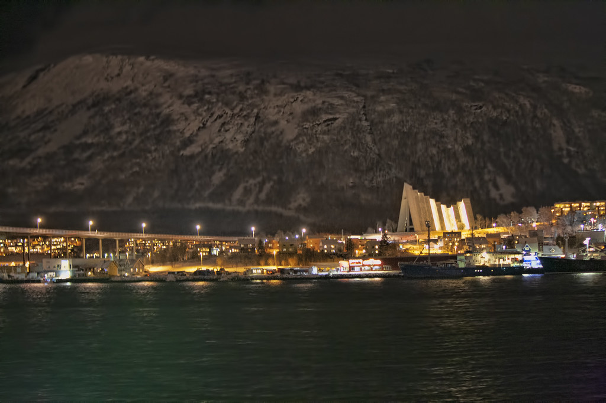
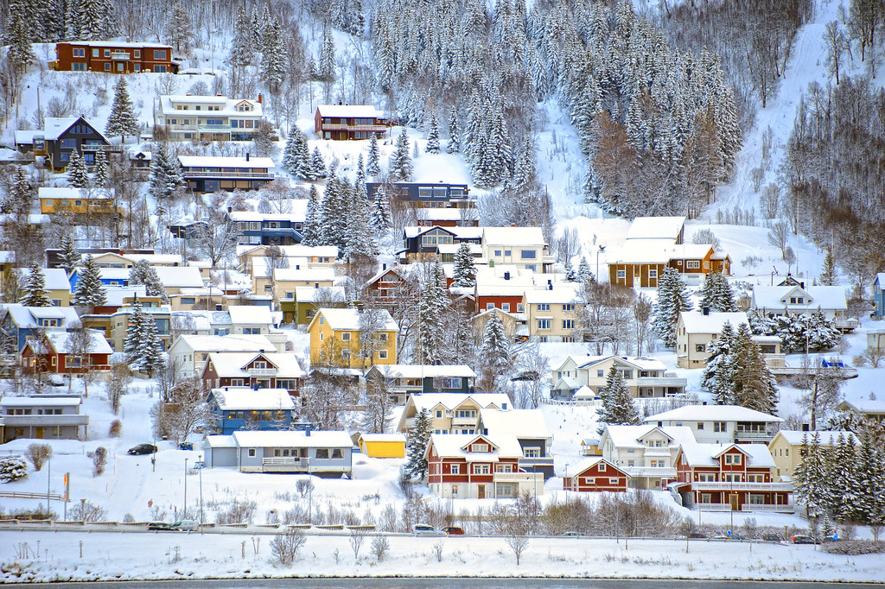
🏡 住宿(含實際價格・2 人合計)
| 日期 | 住宿 | 價格(2 人) |
|---|---|---|
| 3/1 | ⏳ 重訂中(原東北小屋被業者以電力問題取消) | 預估 NT$5,300–8,700 |
| 3/2 | Prestvikvegen(Sommarøy)📍 | NT$4,895 |
| 3/3–3/4 | Fiskergata 6(市中心,2 晚)📍 | NT$7,128 |
| 已訂合計 | 3 晚 | NT$12,023(+3/1 待訂) |
① 海景、陽臺、水療浴缸、免費停車(Eidkjosen・約 8,647・私人熱水池可邊泡邊看極光;要爬樓梯)
② 位於特羅姆瑟的公寓。非常適合兩人入住。(Kvaløysletta・約 8,379・雙人床、自助入住到 21:00)
③ 第九任尼莫。(Storelva・約 7,374・整棟小屋、Queen 床;入住方式要問房東)
④ 北極探險的舒適基地(機場附近・約 5,313 最便宜・完整廚房;光害高)
飯店備案:Steam Pier(Eidkjosen 海邊公寓式・概估 5,500–10,000・停車收費・空房自查)。取消政策都要在訂房頁確認;原訂單 NT$2,154 請確認 Airbnb 已全額退款(含服務費)。
🔑 入住方式(Airbnb 旅程概覽已確認):D1 重訂中、D2 Sommarøy 15:00 起・聯絡房東 Beate(週二 Prestvika 咖啡店 12–16 有人交接;退房 11:00;離開時鑰匙留鎖上並鎖門)、D3–4 Fiskergata 6 15:00 起・密碼鑰匙盒自助(退房 3/5 12:00)。確認碼:D2 HMAR9YTTQR/D3–4 HM9XPPC53T。⚠ Fiskergata 6 是房東同住的私人房間(不是飯店):能否提早寄行李、是否一張雙人床(收據寫 2 張床)要問房東 Valentina。
🌅 光線時間表(對齊藍調與極光)
| 日期 | 日出 | 日落 | 傍晚藍調(最美) |
|---|---|---|---|
| 3/1 一 | ~07:11 | ~16:44 | ~17:20–18:10 |
| 3/2 二 | ~07:10 | ~16:52(Sommarøy) | ~17:30–18:15 |
| 3/3 三 | ~07:02 | ~16:52 | ~17:30–18:15 |
| 3/4 四 | ~06:58 | ~16:56 | ~17:35–18:20 |
| 3/5 五 | ~06:53 | ~17:00 | —(離開日) |
藍調=太陽在地平線下 4°–8°(timeanddate 定義;PhotoPills 用 4°–6°,結束會早約 20 分),約日落後 35–85 分;日落到藍調之間是金粉色餘暉。約 19:00–19:40 起天色已夠暗、可開始守極光(航海暮光結束);真正天文夜約 20:10 後。時刻依當天所在地天文計算、四捨五入到 5 分,屬概值,行前以 timeanddate.com 核對。
| 時間 | 行程 |
|---|---|
| 12:00 | SAS 落地 TOS📍,Alamo 機場取車 ✅ 已訂(ID.3 或同級・電動;取車時段 13:00;證件/押金/流程 → 見下方〈🚗 取車須知〉) |
| ~13:20–14:15 | 市區午餐(取車 13:00 後才出發;機場到市區約 15 分):💰 Risø Mat & Kaffebar📍(三明治・湯・咖啡,café 價位)或超市/麵包店熟食;等取車空檔也可先在機場簡單吃。⚠ Bardus Bistro 週日、週一公休,Raketten 週一/日休 → 都改到 Day3 |
| ~14:30–14:50 | 開往北極大教堂📍,拍三角形外觀(內部開放時段每週不同、會因婚喪儀式臨時關閉,不寫死;NOK 90,可略;🅿教堂旁小停車場、有限)。⚠ Tromsøbrua 大橋 2026/4 起封橋整修(預計 2026/11 通車),未通車就改走海底隧道、每趟多 10–15 分 |
| 15:00–16:55 | Fjellheisen 纜車上山看日落📍(成人來回 NOK 645,book.fjellheisen.no 線上先買;強風會停駛)— 跨日落 ~16:44 的金粉色餘暉。🅿 下站整建中、沒有停車場 → 停 Solstrandvegen 30 臨時免費停車場、走約 5 分;山下有 2 支 Type2 慢充(OSM 資料) |
| ~17:15–18:05 | 海港/Tromsdalen 岸邊拍藍調(最藍 ~17:20–18:10・概值;下山後就近拍,不必趕回市區) |
| ~18:10–18:45 | Coop Extra Tromsdalen 採買晚餐食材(Solstrandvegen 23)📍(週一–六 07:00–23:00;🅿店家免費停車) |
| 18:45 起 | 開往 3/1 住處(⏳ 重訂中;Kvaløya 東側候選約 20–28 分)自炊;晴天就近守第一晚極光 |
| 時間 | 行程 |
|---|---|
| ~08:00 | 住處自理早餐 + 泡咖啡,整裝出發 |
| 09:00 | 從 3/1 住處出發(⏳ 重訂中,車程依住處而定)→ Rema 1000 Kvaløya📍 或 Extra Storelva📍 補今晚 Sommarøy 食材(Sommarøy 島上補給有限;原 Eide Handel 2026 拆除重建、預計 2027/4 開幕;營業時間為 OSM 值・行前核對)+ 補電約 20–30 分(YX Kvaløysletta 有無快充查不到證據 → 用 PlugShare 確認;最穩是在 Obs Jekta Mer 補) |
| ~10:45–11:45 | (時間夠才去)繞進 Ersfjordbotn📍 — Kvaløya 最經典峽灣雪山 + 咖啡店(支線往北、原路折返) |
| 12:00–13:00 | 午餐:Bryggejentene📍(Kvaløya・你們選定) |
| 13:15–14:30 | 續往西南,停 Kattfjordeidet 山口📍、Brensholmen 海灘📍(往 Senja 渡輪口、有沙灘海景;🅿景點停車多免費) |
| 14:30–15:00 | 過 Sommarøy 跨海橋📍取景 → 放行李到 Prestvikvegen 住處📍(🅿橋邊+村內停車;⚡Arctic Hotel Type2、住處插座向房東確認) |
| 16:40–18:20 | Sommarøy 日落→藍調(日落 ~16:52、最藍 ~17:30–18:15・概值;依〈攝影機位〉順序:①跨海橋📍拍日落餘暉 → ②白沙灘📍(pin 為概略位置)→ ③紅漁屋燈火 Arctic Hotel📍 最藍時拍);約 19:00–19:40 起天夠暗可同場守極光 |
| 18:20 起 | 回 Prestvikvegen 住處📍自炊晚餐 |
| 時間 | 行程 |
|---|---|
| ~08:00 | Sommarøy 住處自理早餐 + 泡咖啡,退房整裝 |
| 08:30–10:15 | Sommarøy📍 → Tromsøya 自駕(冬季抓 1.5–2h,可能遇車隊管制,早出發、查 Vegvesen trafikk 路況) |
| 10:15–10:45 | 先開到 Fiskergata 6 寄放行李📍(房東同住的私人房間,能否提早寄放要先問房東;不行就把行李留車上、還車後帶著;15:00 才正式入住) |
| 10:45–11:15 | (可選、時間不夠就跳過)順遊 Telegrafbukta📍 雪景海岸(🅿免費停車) |
| 11:15–11:40 | Obs Jekta(Mer 快充)或機場 Mer 補電📍 ── 補回取車時的電量(三天約 190 km,概值) |
| 11:45 | Alamo 機場還車(✅ 已訂・還車期限 12:00)📍(電量補回取車水位、清雪拍車況/電量/里程存證;勿遲於 12:00 以免被多算一天) |
| 12:00–12:30 | 搭 Airport Express 機場巴士(上車刷卡、不收現金、約 NOK 125;冬季班表行前查)或市區公車 40/42(Svipper App 購票)/計程車回市中心 |
| 12:30–15:00 | 市中心午餐 + 逛 Storgata 主街:在地必吃 Raketten 鹿肉熱狗📍(Stortorget 廣場・1911 老攤・營業時間各來源不一、依天氣調整・~70–100 NOK)或坐下吃 Bardus Bistro📍(週二起營業・先訂位)(購物可與 Day4 分流) |
| 15:00–17:00 | 正式入住、休息、晚餐、著裝保暖 |
| 17:00–深夜 | 極光追雲團(小巴・含接送)— 嚮導機動追晴空;約 NOK 1,350 起(≈NT$4,600)。集合/接送時間以確認信為準 |
| 時間 | 行程 |
|---|---|
| 09:45–13:45 | 狗拉雪橇半日團(Polar Adventures Self-Drive・含接送・自己駕,約 NOK 2,040;集合地點/時間以確認信為準)📍 |
| 14:00–15:00 | Polaria 水族館📍(官網每日 10:00–17:00、舊資料寫冬季 16:00 關 → 雪橇後第一站最保險) |
| 15:00–15:40 | 全世界最北的麥當勞(Storgata 70)📍打卡、收集限定紙袋 |
| 15:40–16:20 | 禮品店買明信片 / 貼紙 / 磁鐵(Tromsø Gift & Souvenir, Strandgata 36;可辦退稅)📍 ── 全程明信片/貼紙主力日(正常營業+退稅,一次買足;避免 3/7 週日 Henningsvær 店關落空) |
| 16:20–16:50 | Domkirke 木造教堂外觀📍 |
| ~17:00–18:20 | 碼頭散步:日落 ~16:56 後的餘暉 → 海港藍調(最藍 ~17:35–18:20・概值) |
| 傍晚/晚上 | 晚餐;若前三晚都沒極光,今晚是最後機會再報一次含接送極光團(隔天早起,別玩太累) |
| 時間 | 行程 |
|---|---|
| 08:30–09:00 | Fiskergata 6 退房(中午 12:00 前皆可,提早退) |
| ~09:00 | Fiskergata 門口一帶搭 42 號公車(約 18 分;Svipper App 購票、車上不收卡)或 Airport Express(上車刷卡、約 NOK 125)/計程車到 TOS 機場📍(2027/3 班表行前查、留雪天緩衝) |
| ~09:20–09:40 | 抵 TOS,報到 / 掛行李(SAS 起飛前 45 分關=10:55 硬底線) |
| 11:40 | TOS → Bodø 起飛,Tromsø 段結束,接續 Lofoten 行程 |
📸 Sommarøy 藍調機位 & 住處看極光
你們住:Prestvikvegen 16 號之後、上坡的白色附屋(Prestvika 海灣旁;不是沙灘邊第一排的 Strandkafé)📍 地圖
三個拍攝點(都在島上、彼此車程幾分鐘)
- ① Sommarøybrua 跨海橋停車場 ★招牌:雪山 + 白沙 + 藍綠海 + 紅木屋 + 橋📍
- ② Sommarøy 主白沙灘(Store Sommarøya 村心):用沙洲/海岸線當前景拍藍調與雪山倒影📍(pin 為概略位置)
- ③ 紅漁屋燈火:港邊 Arctic Hotel rorbuer,冷藍天空配暖色屋燈最對比📍
順序:日落 ~16:52 先在①拍金粉色餘暉 → 走到②沙灘 → 最藍 ~17:30–18:15(概值)拍③亮燈紅屋。
🍳 郊區自炊菜單 & 採買清單(Day1 住處重訂中・Day2 Sommarøy)
兩晚都在小屋自炊:Day1 在 Tromsdalen Coop Extra先買(新住處要有廚房)、Day2 在 Kvaløya(Rema 1000 Kvaløya / Extra Storelva;Eide Handel 原址重建中)買 Sommarøy 食材;挪威物價高,自炊最省、又能吃到當地食材。
🍳 點開看菜單與採買清單
🥣 早餐建議(住處自理・10–15 分搞定)
- 最快:麵包 / 脆麵包 knekkebrød + 挪威棕起司 brunost(刨片必試) + 果醬 + 水煮蛋或炒蛋 + 優格加莓果。
- 想吃熱的(冷天最暖、最省):燕麥粥 havregrøt 加莓果 / 肉桂,一鍋搞定。
- 加分:煙燻鮭魚 røkelaks 夾麵包(配黃瓜片);現煮咖啡或茶(帶掛耳濾掛或用小屋咖啡機)。
- 順手帶上車:用保溫瓶裝熱可可 / 茶,Day2、Day3 路上與守極光時喝。
🍽 晚餐建議
- Day1(抵達日・求快):香煎挪威鮭魚(laks)+ 水煮馬鈴薯/蔬菜 + 麵包;或盒裝魚湯(fiskesuppe)加熱配麵包,10 分鐘搞定,剛落地最省力。
- Day2(Sommarøy 漁村):3 月正逢冬季鱈魚 skrei 季 → 鱈魚海鮮湯;或馴鹿肉片(finnbiff)奶油燉配馬鈴薯泥。海景小屋配熱湯,蜜月感滿分。
🛒 採買清單(對照超市好拿)
- 蛋白質:鮭魚 laks / 當季鱈魚 skrei / 馴鹿肉片 finnbiff / 雞蛋 / 培根
- 主食:馬鈴薯、義大利麵、麵包(配挪威棕起司 brunost 必試)
- 快煮湯底:盒裝魚湯 fiskesuppe、蔬菜湯包(冷天神器)
- 蔬菜:紅蘿蔔、洋蔥、青花菜、菠菜
- 早餐:麵包、brunost、優格、雞蛋、咖啡/茶
- 🌌 追極光宵夜:熱可可粉、即溶熱茶(裝保溫瓶帶出門)、餅乾、能量棒
- 調味:鹽、胡椒、奶油、油(小屋不一定有,先確認)
每日里程 & 冬季續航
| 天 | 路線 | 里程 |
|---|---|---|
| Day1 | 機場→市區→大教堂→纜車→超市→3/1 住處(重訂中) | ~40–60 km(依住處) |
| Day2 | 住處→Kvaløya 採買+補電→Ersfjordbotn→Brensholmen→Sommarøy | ~70–110 km(依住處) |
| Day3 | Sommarøy→Telegrafbukta→機場還車 | ~60 km |
冬季實際續航(3 月初 −7~−11°C,掉電約 20–35%)
- Kia Niro EV(64.8 kWh)≈ 290–320 km
- VW ID.3 Pro(可用約 59 kWh)≈ 260–290 km
- VW ID.3 Pure(可用約 52 kWh)≈ 220–250 km → 建議中途充一次
→ 「回機場剩幾成」不重要,重點是還車前補回取車電量;車款實際電池容量取車時看儀表確認。
充電點(OSM/NOBIL 資料・行前用 PlugShare 核對)
省電 / 安全
- 預熱(precondition)趁插電時做,不吃電池續航
- 多用座椅加熱、少開大暖氣;久停拍極光別一直開暖氣
- ID.3 是後驅,冰面易打滑 → 務必釘胎;強風橋面注意側風
- 住處能插電就插電過夜(普通插座 8–12h 約補 60–120 km・概值)
| 項目 | 重點 | 時機 |
|---|---|---|
| 🚗 租電動車(✅ 已訂) | Alamo・VW ID.3 或同級(電動)・NT$5,863(Trip.com 線上預付、含碰撞/盜搶/第三責任+租車保障)・2 天無限里程・等電取還;取 3/1 13:00 → 還 3/3 12:00(皆機場);免費取消至 3/1 12:00;押金=租金+NOK 10,000(約 NT$3.9–4.0 萬);門市 +47-90814000;⚠ 憑證明文:航班延誤不保留車輛 → OSL 一宣布延誤就打門市+Trip.com;不取車要在 3/1 12:00 前免費取消;待辦:確認/預約釘胎、Trip.com 訂單頁截圖電量政策 | 已完成(釘胎待確認) |
| 🐕 狗拉雪橇 | Polar Adventures「Self-Drive + incl. transport」,指定 3/4 上午梯次 | 提前 1–2 個月 |
| 🌌 極光團 | 小巴追雲團 + 含接送 + 免費取消(3/3 晚)。兩種訂法:A 12 月先訂可免費取消的團占位、出發前 1–2 天看雲量決定 / B 出發前 1–2 天才訂 | A 或 B(你們決定) |
| 🚡 Fjellheisen | book.fjellheisen.no 網購來回票(成人 NOK 645);行前確認整建/營運、停車改 Solstrandvegen 30 | 行前一個月 |
| 🛒 食材 | Day1 在 Tromsdalen Coop Extra、Day2 在 Kvaløya(Rema 1000 Kvaløya/Extra Storelva;Eide Handel 原址重建中)先買齊 | 當天 |
📍 Tromsø 在地地圖速查
住宿・採買/美食・交通・⚡充電站・景點活動;點標記看名稱與「導航 →」。點上方日期=只亮當天行程(定案動線附 ①②③ 與虛線、編號底色=左列類型色;A/B/C 未定日拆成各案一顆鈕、各自顯示順序,不替你們選案)、點「全部」回全域。地圖需網路;離線用下方 chips(點即開 Google Maps)。
景點・活動・補給
住宿 & 取/還車
❄ 通用雪地駕駛要領與每日必查(yr.no / Vegvesen trafikk / Varsom)→ 〈冬季雪地自駕〉
Bodø 在地・逐日(3/5–3/6 早)
過夜防火牆:擋掉隔天 Widerøe 小飛機的取消連鎖。飯店含三餐,這一晚的任務就是休息充電。
🏡 住宿(含實際價格・2 人合計)
| 日期 | 住宿 | 價格(2 人) |
|---|---|---|
| 3/5 | Home Hotel Grand Bodø(市中心・標準雙人房)📍 | NT$5,049 |
| 合計 | 1 晚 | NT$5,049 |
房價含早餐+下午 fika+晚間簡餐,這晚免自炊免外食;實付 NOK 1,350.91(2026/8/9 已扣款),取消/未入住收全額。
🔑 入住方式(Booking.com 確認單+飯店私訊已確認):地址 Professor Schyttes gate 1(離 Sentrumsterminalen 巴士總站步行 2–3 分);check-in 15:00 起・退房 12:00,早到先寄行李、想早入住視空房先問櫃台。床型 1 張加大雙人床 151–180cm。餐食時段:早餐 六日 07:30–10:00(平日 06:30–09:30)・fika 15:00–17:00・晚間簡餐 18:00–20:00。訂單修改須經 Booking.com。確認碼:6606.136.215。
| 時間 | 行程 |
|---|---|
| 12:40 | SK4561 落地 BOO(領行李);機場離市中心僅 ~2km → 市區公車 1、2 號(週五約 5–10 分一班、車程約 5 分、約 NOK 45 起)/ 計程車 5 分 / 走路 15–25 分 |
| 13:10 | 抵 Home Hotel Grand Bodø 寄放行李📍(check-in 15:00;想早入住視空房先問櫃台) |
| 13:20–15:00 | 市區小而美:海港散步、簡單午餐,或回房休息(連日追光,累了就躺) |
| 15:00 | 正式入住 → ☕ fika 15:00–17:00(含在房價、剛好接上) |
| 下午 | 三選一(都要先對潮汐表,對不上就選 A): A 只逛市區:fika 後海港散步,日落 ~17:25 → 藍調 ~18:00–18:40(概值)後回飯店晚餐 B1 Saltstraumen📍 早去早回:約 13:26 出發、搭 15:35 回程(在漩渦約停 50 分;寄行李後要趕) B2 14:50 去、搭 18:39 回程(停約 3h、大半在天黑後戶外等車,約 19:15 才回市區、含在房價的飯店晚餐只剩約 40 分) (公車時刻為 Entur 2027/3/5 查詢值,行前用 Reis App 核對) |
| (可選) | 💆 Feel 24 Balansen spa(飯店合作・桑拿+熱水浴缸 NOK 190/人、房客護理 85 折;營業時間不固定、先問櫃台) |
| 18:00–20:00 | 🍽 飯店晚間簡餐(含在房價:湯/沙拉/熱菜)→ 這晚免自炊免外食 |
| 20:30 | 打包明早行李、Widerøe App 線上報到(起飛前 22h 開放)、跟 Mørkveden 房東確認入住、早睡 |
| 時間 | 3/6(六)早上・趕機鬧鐘表(WF806 10:55 起飛) |
|---|---|
| 07:00 | 起床梳洗(行李前一晚打包完;前晚已用 Widerøe App 線上報到) |
| 07:30 | 早餐開門就進場(週六 07:30–10:00・飯店已私訊確認)── 吃到 08:10 |
| 08:10–08:15 | 退房(修改訂單須經 Booking.com,現場只辦退房) |
| 08:15 | 出發往機場:計程車約 5 分(週六早上公車約 30 分一班,拖兩大箱建議計程車) |
| 08:30–08:45 | 抵 BOO → Widerøe 櫃台/自助掛行李(櫃台起飛前 2h 開、30 分前關=10:25 硬底線,自訂緩衝 09:55 前辦完;託運 23kg・158cm、20kg 以上排有人櫃台;手提+個人物品合計 ≤8kg、55×40×20cm,相機包也算) |
| 09:00 | 安檢(國內線、無護照查驗)→ 候機 |
| 10:55 | WF806 起飛 ✈(11:20 抵 Leknes → 接 Lofoten Day 6 Hertz 取車+大採買) |
① 一確定延誤就打 Hertz +47-76081844,告知新航班,問能不能延過 14:00 或改隔天取車;② 行前先問 3/7 週日門市有沒有營業、有沒有 key box;③ 通知 Mørkveden 房東可能晚到。
備案並列:A 改簽當天較晚班次 / B 留 Bodø 多住一晚、隔天飛 / C 落地後計程車到住處、隔天回機場取車 ── 各自的退費與加價要當下問清楚。
📍 Bodø 在地地圖(標記=行程活動點)
住宿・交通・景點;點標記看名稱與「導航 →」。點上方日期=只亮當天行程(定案動線附 ①②③ 與虛線、編號底色=左列類型色;A/B/C 未定日拆成各案一顆鈕、各自顯示順序,不替你們選案)、點「全部」回全域。地圖需網路;離線用 📍。
西 Lofoten 在地 6 日・定案逐日(3/6–3/12)
三段住宿:Ramberg(已訂)→ Reine cabin(已訂)→ Ballstad(收尾近機場)、全程自走低風險健行、深度攝影 + 多拍漁村藍調、自炊。
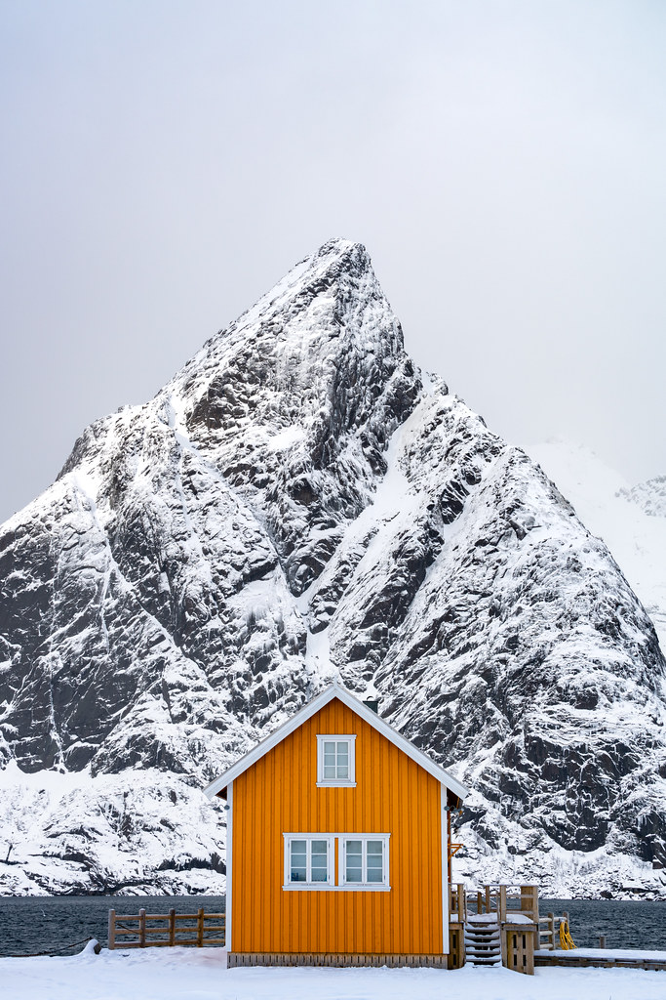
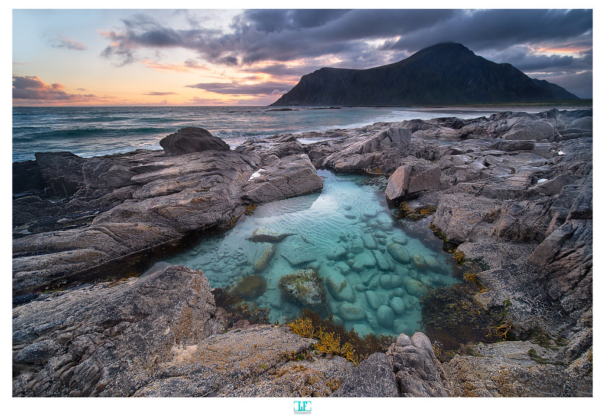
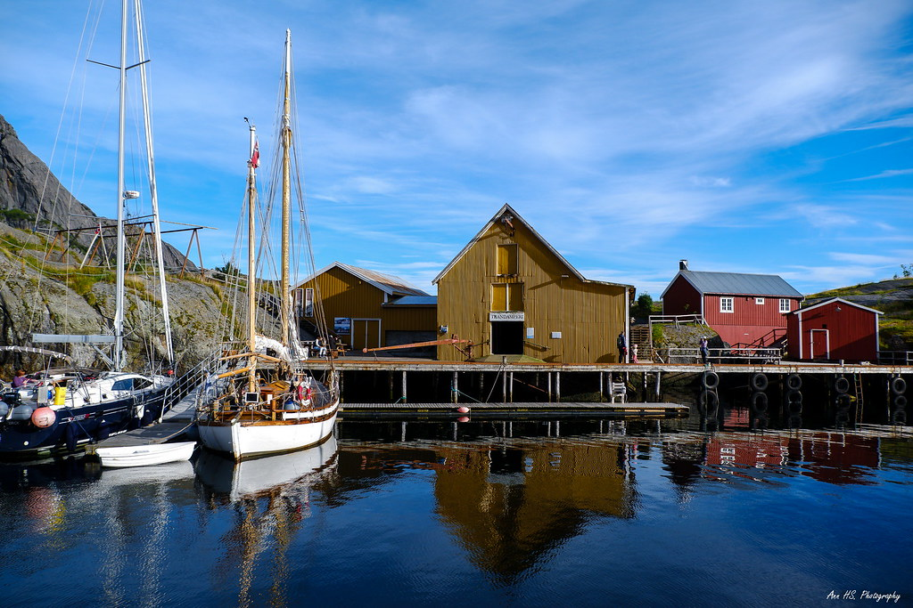
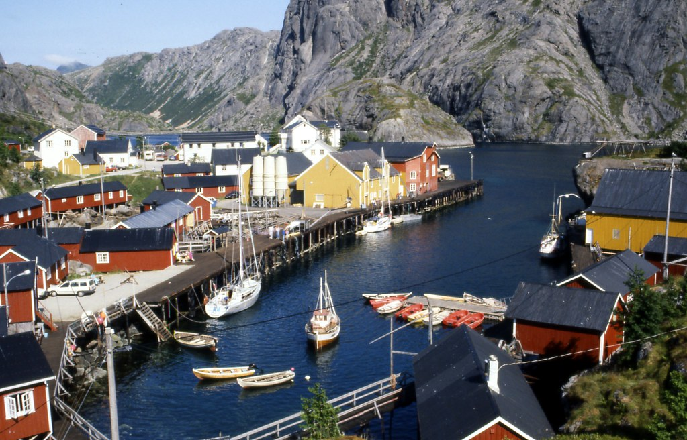
🏡 住宿(含實際價格・2 人合計)
| 日期 | 住宿 | 價格(2 人) |
|---|---|---|
| 3/6–3/7 | Mørkveden(Ramberg 南方約 9 km・Skjenfjorden)✅ 已訂📍 | NT$10,611 |
| 3/8–3/10 | Reine cabin(46 Kirkeveien)✅ 已訂📍 | NT$27,661 |
| 3/11 | Ballstad・Hemmingodden Lodge ✅ 已訂📍 | NT$8,750 |
| 已訂合計 | 3 段・6 晚 | NT$47,022 |
只搬 2 次;Hamnøy 紅屋、Sakrisøy 黃屋離 Reine 約 8 分,改為拍照點(不住)。Reine、Ballstad 兩筆 Booking.com 金額是確認單 NOK 總價換算的概算,實付以卡帳單為準。
🔑 入住時間:Mørkveden 15:00 起・密碼鑰匙盒(行程約 14:30–14:45 到,先在車上等或先逛);Reine cabin 16:00–21:00(取鑰方式依房東通知,確認單沒寫 lockbox;入住刷 NOK 3,000 損壞押金);Hemmingodden Lodge check-in 15:00–22:00、退房 08:00–11:00 → 3/12 要 07:05 左右出發、早於退房窗 → 入住時先跟 Lodge 講好提早自助退房;能否提早寄放行李沒有依據,行李先留車上。⚠ Hemmingodden 確認單設施沒列廚房(只有冰箱/咖啡機/熱水壺)、床在閣樓要爬陡梯 → 用 Booking 訊息問有沒有爐具或共用廚房。兩份 Booking 單的預計抵達時間要更新成實際時刻。
🌅 光線時間表(約 68°N・概值)
| 日期 | 日出 | 日落 | 傍晚藍調(最美) |
|---|---|---|---|
| 3/6 六(Ramberg) | ~07:05 | ~17:30 | ~18:05–18:50 |
| 3/7 日(Ramberg) | ~07:05 | ~17:35 | ~18:10–18:50 |
| 3/8 一(Reine) | ~07:00 | ~17:40 | ~18:15–19:00 |
| 3/9 二(Reine) | ~06:55 | ~17:45 | ~18:15–19:00 |
| 3/10 三(Reine) | ~06:50 | ~17:45 | ~18:20–19:05 |
| 3/11 四(Ballstad) | ~06:45 | ~17:50 | ~18:25–19:05 |
| 3/12 五(Leknes) | ~06:40 | —(離開) | — |
日照逐日約 +8 分變長(日出約早 4 分、日落約晚 4 分)。藍調=太陽在地平線下 4°–8°(timeanddate 定義),約日落後 35–80 分;日落到藍調之間是金粉色餘暉。約 19:30–19:50 起天色已夠暗、可守極光(航海暮光結束);真正天文夜約 20:45 後。依當天所在地天文計算、四捨五入到 5 分,屬概值,行前以 timeanddate.com 核對。
| 時間 | 行程 |
|---|---|
| 11:20 | WF806 抵 LKN,Hertz 機場取車 ✅ 已訂(VW ID.4 或同級・電動 4WD;門市 10:00–14:00、取車時段 12:00、航班延誤訂單保留至當天 13:00;航廈步行可達;備妥 microspikes、頭燈) |
| 12:15–13:40 | Leknes 大採買(週六＝週日關門前最後正常採買)📍:① 先衝 Vinmonopolet 買酒(Leknes 週六 10–16、週日休,全程想喝的一次買齊)→ ② Coop Extra / Rema 1000 食材買足 3/6–3/8(含週日)份量 → ③ 順手買明信片/磁鐵;🅿 停車免費、⚡REMA 1000 Eviny 快充(標 350kW)邊買邊充(住處沒有充電,這次一定要充) |
| ~13:45–14:45 | 往西 → ⛔ Nappstraumen 隧道引導車(Leknes 側白天整點放行,約搭 14:00 那班)→ 抵 Mørkveden(Flakstadveien 651)✅ 已訂📍(Leknes→住處純車程約 42 分;密碼鑰匙盒自助入住 15:00 起,早到先在車上等;確認碼 HMMATQ2TYY;退房 3/8 12:00;🅿私人停車、⚡住處無充電) |
| ~17:15–18:50 | Skagsanden 沙灘:日落 ~17:30 → 藍調 ~18:05–18:50📍(住處開約 15 分;濕沙鏡面倒影+雪峰,著名極光灘;🅿 可能收費,付款方式看現場告示・待確認) |
| ~19:05 | 回小屋📍自炊;晴天就在 Skagsanden / 門口守極光(都在隧道這一側,不用穿隧道) |
| 時間 | 行程 |
|---|---|
| ~08:00 | 由 Mørkveden 出發(日出 ~07:05,已天亮)→ ⛔ Nappstraumen 隧道引導車(Flakstad 側每小時 :30 放行,搭 ~08:30 那班) |
| ~09:00–09:30 | Leknes REMA 1000 順路快充📍(只多 4 km;備案 Offersøya 的 Kople Basecamp)── 住處沒充電、全程約 195–205 km,不充回不到家 |
| ~10:45 | Henningsvær 海上足球場(Henningsvær Stadion)📍 + 藝術漁村、畫廊/設計店(Engelskmannsbrygga、KaviarFactory 一帶);🅿村內極窄→停村外走路、付費;無快充(只有零星慢充、疑似限住客) |
| 12:30 | 咖啡/午餐(行前查 IG 確認當天有店開)、港邊彩色木屋街拍;⚠ 週日商店/畫廊多關門 → 明信片/貼紙改 3/4 Tromsø 或 3/6 Leknes 買齊,勿指望此日採購 |
| ~15:30 | 離開 Henningsvær(✅ 你們選 C 案:不在這裡等藍調,換掉 1.5–2h 夜間雪路) |
| ~17:00 | ⛔ Nappstraumen 隧道引導車(Leknes 側 17:00 那班;錯過就要等 18:00) |
| ~17:20–18:50 | Skagsanden 沙灘:日落 ~17:35 → 藍調 ~18:10–18:50📍(離家 15 分) |
| ~19:05 | 回小屋自炊 |
| 時間 | 行程 |
|---|---|
| ~08:30 | Mørkveden 退房出發(行李帶著)→ ⛔ Nappstraumen 隧道引導車(Flakstad 側搭 ~09:30 那班) |
| ~09:45–13:30 | Haukland ↔ Uttakleiv 海岸路長走📍(來回約 5–8 km、抓 2.5–4h;免登頂、低風險);🅿 Haukland 26 NOK/時、前 20 分免費(EasyPark/收費機,停好就要付);Uttakleiv📍 約 60 NOK/每 3 小時、上限 300/24h(YouPark 網站 48 小時內付・概值) |
| ~14:00–14:45 | Leknes REMA 1000 補 3/8–3/11 生鮮+快充📍(住處兩晚沒充電、三天約 390 km,這次一定要充) |
| ~15:00–16:30 | ⛔ Nappstraumen 隧道引導車(Leknes 側 15:00 或 15:30 那班)→ 南下入住 Reine cabin(46 Kirkeveien)✅ 已訂(入住 16:00–21:00,取鑰方式依房東通知;入住須刷 NOK 3,000 損壞押金(≈NT$1 萬)、退房後 7 天內退還;確認碼 5988.399.928)📍 |
| ~17:30–19:00 | Hamnøy 橋:日落 ~17:40 → 藍調 ~18:15–19:00📍(離 Reine 約 8 分:紅屋+雪峰+倒影)+ Sakrisøy 黃屋📍 |
| ~19:10 | 自炊;晴天就近守極光:Reine 港、Hamnøy、Sakrisøy、Torvdalshalsen(都在隧道的 Reine 這一側、車程 10–15 分)。⚠ 不去 Uttakleiv:要穿隧道,約 23:00 後回不來、要等 02:00 |
| 時間 | 行程 |
|---|---|
| ~09:10 | 退房,Reine → ⛔ Nappstraumen 隧道引導車(Flakstad 側搭 ~10:30 那班) |
| ~10:50–11:40 | Leknes REMA 1000 快充到「取車電量 +10%」📍(3/12 還車基準+寒夜緩衝;Hemmingodden 充電待確認)+ 買今晚晚餐(住處可能沒廚房 → 熟食/免開火) |
| ~12:00 | 抵 Ballstad📍(Reine→Ballstad 純車程約 70 分);行李先留車上,港邊午餐、休息 |
| 15:00 | Hemmingodden 正式入住;講好 3/12 提早自助退房、告知今晚下山預計時間;🅿 Lodge 停車 |
| ~17:05 | 開到登山口停車場📍(Kræmmervikveien,離 Lodge 約 850 m、開車約 7 分)→ 趁天還亮上山(單程約 1 km、爬升約 260 m,冬季抓 40–50 分) |
| ~17:50–19:05 | Ballstadheia 高台(約 270m)俯瞰 Ballstad 漁村+Buksnesfjord+Vestfjord:日落 ~17:50 → 金粉色餘暉 → 藍調 ~18:25–19:05(概值) |
| ~19:05–20:00 | 戴頭燈+microspikes 摸黑下山(陡段結冰慢行,抓 45–60 分)→ 回 Lodge |
| ~20:15 | 晚餐(見下方:住處可能沒廚房);備好 3/12 早班機 |
出發前全部符合才上山:① Varsom 雪崩等級 1、yr.no 風速不強、沒有凍雨或新雪結冰 ② 兩人各一支頭燈+備用電池、microspikes、登山杖、保暖層、熱飲 ③ 手機充飽、離線地圖+步道軌跡 ④ 上山時趁天亮記好下山路線 ⑤ 跟 Lodge 說好預計回來時間。
任何一項不符就改 B 案:不上山,在 Ballstad 港邊平地拍漁村藍調(離 Lodge 走路幾分鐘)。
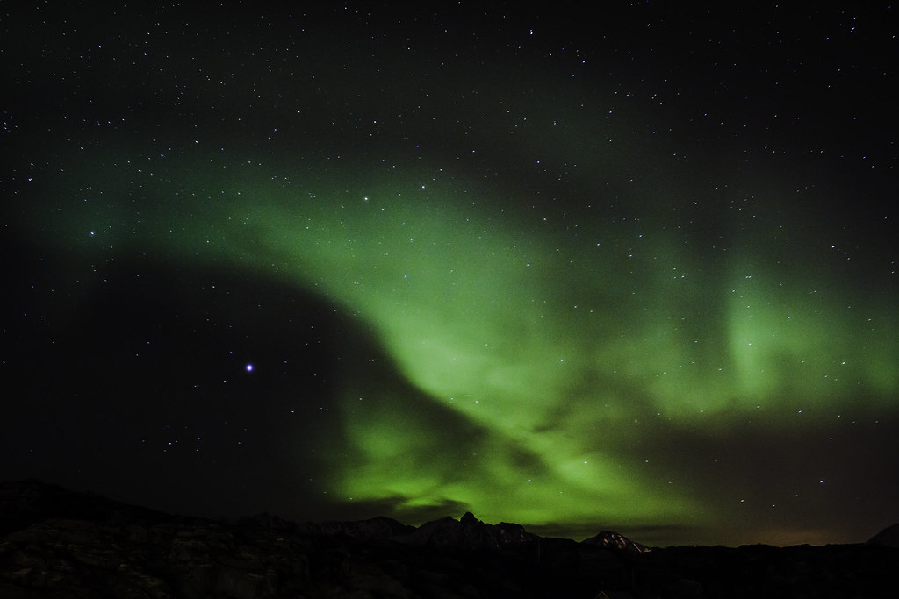
🛫 Day 12(3/12 五)離開日・LKN 還車飛走| 時間 | 行程 |
|---|---|
| 07:00 | 先開 Widerøe App 確認 WF892 會飛 ── 停飛就先不還車,改走下方停飛備案 |
| ~07:05 | 自助退房出發 Ballstad → LKN📍(12 km、無雪約 16 分;日出 ~06:40 已天亮,黑冰慢行;3/11 已把電補到取車水位)。若取車時 Hertz 同意改約 08:00 還車,就改 ~07:35 出發 |
| ~07:30 | LKN 還車(Hertz 憑證:還車 07:30、3/12 門市 07:00–18:00):交車前內外觀+電量+里程整輪拍照存證(時間戳記);憑證註明行前聯絡門市確認還車地點(電話 +47-76081844,可與預約釘胎同一通) |
| ~07:45–08:30 | 進航廈:Widerøe 報到 / 自助掛行李(櫃台起飛前 2h 開、30 分前關=09:00 硬底線;行李直掛 OSL)→ 安檢(國內、無護照查驗)→ 候機 |
| 09:30 | WF892 起飛(經 BOO→OSL,行李直掛 OSL、聯程受保護) |
A 同票改簽當天較晚的航班 / B 延長租車、白天開到 Evenes(EVE,約 244 km・約 4–5h)搭 SAS 回 OSL(甲地租乙地還要先問 Hertz)/ C Hurtigruten 從 Stamsund 南下 Bodø、隔天早班機(要在約 09:30 前到 OSL,看冬季班表是否可行)。
每日里程 & 充電安排
| 日期 | 路線 | 里程 | 充電建議 |
|---|---|---|---|
| 3/6 | LKN 取車→Leknes 採買→Mørkveden→Skagsanden 來回 | ~70 km | 取車確認電量;Leknes 大採買時一定要充(住處沒充電) |
| 3/7 | Mørkveden ⇄ Henningsvær 來回(經 Leknes) | ~195–205 km ⚠ | 去程 Leknes REMA 快充 20–30 分(備案 Kople Basecamp・Offersøya);全程不充回到家只剩約 +6% 到 −7% |
| 3/8 | Mørkveden→Haukland→Leknes→Reine | ~120 km | Leknes REMA 補貨時快充 |
| 3/9–10 | Reine 周邊(3/10 A Å 約 20 km/B Nusfjord 約 83 km) | 各 ~20–85 km | Reine 村裡有快充;住處能插電過夜最理想(Reine cabin 先問房東) |
| 3/11 | Reine→Leknes→Ballstad+登山口 | ~75 km | 途經 Leknes 快充到「取車電量 +10%」(還車基準+寒夜緩衝);Hemmingodden 充電向房東確認 |
| 3/12 | Ballstad→LKN 還車 | ~12 km | 只需與取車時相同、不用充滿;早上勿再排充電(差額付錢了事,別為省小錢冒趕機風險) |
→ 全程至少約 520 km / 6 天(OSRM 無塞車值);3/6、3/7、3/8、3/11 都要在 Leknes 快充,3/9–3/10 靠 Reine 村裡快充。
充電點(OSM/NOBIL 資料・行前用 PlugShare 核對)
找站用 PlugShare(看留言、確認營運商);付款主力用 Elton(Mer/Recharge/Kople/Tesla),Leknes REMA 的 Eviny 站要另裝 Eviny Bilkraft(外國門號註冊常失敗,行前在台灣先試);新快充多半可感應刷卡,但別只靠刷卡。Å 連加油站都沒有。
冬季省電 / 安全
- 低溫續航打 7–8 折,別讓電量低於 20%;快充冬天較慢,每次預留 20–45 分
- 插電時先預熱車內(用市電暖車不吃電池,省續航)
- 多用座椅加熱、少開大暖氣;定點守極光別一直開暖氣
- 已訂 ID.4 或同級(電動 4WD),雪地穩定性比後驅好,但 4WD 只幫加速不幫煞車 → 仍務必釘胎、慢開保持距離;住處能插電就插電過夜
- Ballstadheia 高台(約 270m、單程約 1 km、爬升約 260 m;3/11 傍晚上、拍藍調、破例摸黑下山,安全條件見 Day 11;第一段陡、microspikes)
- Haukland ↔ Uttakleiv 海岸路長走(平路、免登頂,來回約 5–8 km、2.5–4h)
- Offersøykammen(多數來源約 436m,短但陡,不算入門;Ballstad 備選白天健行)
- 村景慢走:Å 鱈魚架、Reine 碼頭、Reinefjorden 觀景
🍽 冬季餐食 & 🦅 海鵰遊船
🍽 餐食(常縮時/季節休,先查/訂位)
Anitas Seafood(Sakrisøy)、Gammelbua / Krambua(Reine)、Brygga(Å);Gadus(Hamnøy)2026/3 查為暫停。最保險=附廚房的 rorbuer 自炊 + 在 Leknes 超市(Coop Extra/Rema 1000/Bunnpris)採買。
🦅 海鵰遊船(Svolvær 出發,3 月運行)
Trollfjord 大船+海鵰約 950–1,250 NOK(約 3h、含魚湯,平穩保暖);RIB 快艇約 1,095 NOK(約 2h,離鷹近但冷濕)。最順排在進出 Svolvær 那天(本計劃未安排,想看海鵰再加)。官網 trollfjordcruise.com / rib-lofoten.com。
🌧 雨天 / 機動備案
Lofotr 維京博物館(Borg・維京長屋,1.5–2h,下雨天最佳;2026 年底只開週三、週六,2027/3 時段未公布・待確認)、Å 室內博物館(3 月時段未公布・待確認);往東順遊(僅在加海鵰遊船時)可加 Svolvær / Kabelvåg(補給、老城木教堂)。Reinebringen / Kvalvika 冬季不上(見〈健行〉)、Vesterålen 這趟跳過(賞鯨 3 月過季、極光又與 Tromsø 重複)。
🍳 自炊菜單 & 採買清單(Lofoten 6 晚・壓低餐費)
Ramberg、Reine 有廚房;Ballstad Hemmingodden 確認單沒列廚房(待確認) → 前 5 晚三餐盡量自理。挪威外食一餐動輒 NOK 250–400,自炊兩人一天 ~NOK 250–400 就吃得好;全程 Lofoten 食材費抓 ~NOK 2,000–3,000(約 TWD 6,800–10,200)。
🛒 採買節奏(關鍵:配合週日關門)
- 3/6(六)Leknes 大採買 ★主力:Coop Extra / Rema 1000 一次買齊耐放主食 + 含週日(3/7)的份量;先衝 Vinmonopolet 買酒(週六約 15–16 時提早關)。
- 3/8(一)過 Leknes 補貨:Haukland→Reine 路上回 Leknes 補 3/8–3/10 生鮮(週一店開);Leknes 週日或有 Rema/Bunnpris 小店營業(只有 OSM 資料・待確認)。
- 村內小店只救急:Reine/Å/Ballstad 有小店(Ballstad 超市離 Hemmingodden 約 200m),但貴又少;Å 連加油站都沒有,離 Leknes 前補滿。
🍳 點開看壓低餐費招數・6 晚菜單・採買清單
💰 壓低餐費招數
- 買自有品牌(Coop X-tra / Rema 1000 / First Price)最便宜;冷凍蔬菜、冷凍魚比生鮮省。
- 便宜蛋白質:雞蛋、番茄鯖魚罐(makrell i tomat)、冷凍鱈/鮭、雞腿;3 月正逢冬季鱈魚 skrei 季,在地新鮮又不貴。
- 盒裝魚湯 fiskesuppe、義大利麵、燕麥粥=快、暖、超省;自帶手沖咖啡免買 café。
- 水龍頭水可直接喝;啤酒超市買(平日約 20:00、週六約 18:00 後不賣、週日不賣)、葡萄酒/烈酒只在 Vinmonopolet。
🍽 6 晚菜單(對齊行程)
| 晚 | 晚餐(自炊) | 當天午餐 |
|---|---|---|
| 3/6 六 | 抵達累 → 盒裝魚湯 + 麵包 或義大利麵(10 分鐘) | 採買日,超市熟食/麵包 |
| 3/7 日 | Skagsanden 拍完約 19:05 到家 → 義大利麵(番茄肉醬)或回鍋魚湯 | 帶三明治便當(週日店關)+ 保溫瓶熱飲 |
| 3/8 一 | 香煎鮭魚 + 水煮馬鈴薯 + 冷凍蔬菜 | Haukland 長走 → 帶三明治便當 |
| 3/9 二 | 冬季鱈魚 skrei 煎/燉 + 馬鈴薯(在地當季) | 漁村慢遊,Anita's 小吃或自備 |
| 3/10 三 | 馴鹿肉片奶油燉 或 雞腿馬鈴薯一鍋烤 | Reine 散步,簡單三明治 |
| 3/11 四 | 末晚:Hemmingodden 若有爐具→ 在地鮮魚小奢一下;沒有→ HEIM 餐廳(營業待確認)或超市熟食 | Ballstad 港邊午餐或便當 |
🛒 採買清單(對照超市好拿)
- 主食:馬鈴薯(大包)、義大利麵、米、麵包、燕麥、knekkebrød 脆麵包
- 蛋白質:雞蛋、冷凍鮭/鱈或在地 skrei、雞腿、番茄鯖魚罐、火腿/培根
- 快煮湯底/醬:盒裝魚湯 fiskesuppe、義大利麵醬、湯包
- 蔬果:冷凍綜合蔬菜、紅蘿蔔、洋蔥、蘋果/香蕉、檸檬
- 早餐/抹醬:brunost 棕起司、起司片、果醬、優格、奶油、咖啡豆/茶
- 便當/守極光:吐司+起司火腿(做三明治)、能量棒、餅乾、熱可可粉(保溫瓶)
- 調味:鹽、胡椒、油(小屋不一定有,先確認)
⚠ 3/7 週日大超市關 → 3/6 一定把含週日的份量買足;健行/晚歸日(3/7、3/8、3/11)前一晚先做好三明治便當最省時省錢。
| 項目 | 重點 | 時機 |
|---|---|---|
| 🚗 租車(LKN 取還)(✅ 已訂) | Hertz・VW ID.4 或同級(電動 4WD)・NT$29,413(Trip.com 線上預付、含保險/租車保障)・6 天無限里程・電量政策待截圖存證;取 3/6 12:00(門市 10:00–14:00)/ 還 3/12 07:30(當日門市 07:00–18:00;取車時問能否改約 08:00);憑證號 L688E060075、門市 +47-76081844、免費取消至 3/6 12:00;待辦:電話預約釘胎(免費、無法網路訂)+確認還車地點+問 3/7 週日門市/key box | 已完成(釘胎待約) |
| 🛏 Ballstad 末晚住宿(✅ 已訂) | Hemmingodden Lodge・NT$8,750(概算・check-in 15:00–22:00);待問:有沒有爐具/共用廚房、HEIM 3/11 晚上營業、3/12 提早自助退房;更新預計抵達時間 | 行前用 Booking 訊息問 |
| ⛴ Reinefjorden 觀光船 | 3/9(二)~10:00 或 ~14:15 擇一(當天看海況);在 Reis App 購票即完成預訂(最晚開船前 60 分;開船前 6h 前可取消退款);電話 +47 994 91 805 是否仍受理待確認 | 3/8–3/9 在 App 買 |
| 🥾 健行裝備 | microspikes/冰爪 + 頭燈 + 登山杖(Ballstadheia/Haukland) | 出發前備妥 |
📍 Lofoten 在地地圖速查
住宿・採買/美食・交通・⚡充電站・景點活動;點標記看名稱與「導航 →」。點上方日期=只亮當天行程(定案動線附 ①②③ 與虛線、編號底色=左列類型色;A/B/C 未定日拆成各案一顆鈕、各自顯示順序,不替你們選案)、點「全部」回全域。地圖需網路;離線用下方 chips(點即開 Google Maps)。
冬季雪地自駕注意(Tromsø + Lofoten)
兩段都租電動車、三月雪地行車的法規、路況、每日查詢與安全重點
🛞 法規 & 配備
- 釘胎合法期 10/16–4/30(Nordland);兩段租車冬季設備費皆已含 ── Hertz 釘胎須電話預約(+47-76081844,免費、無法網路訂);Alamo 於 3/1 取車時當場確認釘胎。
- 沿海融凍路滑建議用釘胎,不需 4×4(有更安心);ID.3 後驅,釘胎更重要。
- 健行另備 microspikes/冰爪 + 頭燈,車上常備。
🌨 路況 & 駕駛
- E10 / Fv862 窄、限速低;路況一天內可從乾→黑冰→積雪→雪泥快速變化。
- 橋面強風會封橋:Tromsø 的 Sandnessund 橋、Sommarøy 橋、Lofoten 的 Reine–Hamnøy 單線橋(有紅綠燈)都曾因強風關閉或結冰 ── 過橋注意側風、橋面結冰起步小心。
- 盡量白天行車、夜間定點守極光;久停拍極光別一直開暖氣(EV 耗電)。
📱 每天出發前必查
- Yr / yr.no ── 天氣 / 風 / 能見度
- Vegvesen trafikk(App/vegvesen.no/trafikk)── 即時路況、封路、車隊管制、路況攝影機;路況電話 175 是挪威門號短碼,台灣門號撥 +47 22 175 175
- Varsom(App/varsom.no)── 雪崩預警(12/1–5/31 每日 16:00 前發布;無裝備只走 Danger Level 1)
- 停正式停車格、勿擋鏟雪車;停車依現場告示付費:多用 EasyPark App 或收費機,Uttakleiv 用 YouPark 網站登記車牌(不是 App)。
極光攻略
看極光的關鍵
- 雲是最大敵人:核心是「去找沒雲的天空」──「KP 1 的晴空,完勝 KP 8 的滿天雲」。
- 暗夜越黑越好:挑新月前後;本行程兩地合計 10 晚(Tromsø 4 + Lofoten 6)就是為了拉高機率。
- 春分增強:3 月春分前後地磁特別活躍(Russell–McPherron 效應),「機率體質」比深冬更好。
- KP 指數:Tromsø 與 Lofoten 都在極光帶附近,KP 不高也可能看到,不必等大爆發(「KP 幾以上一定看得到」沒有官方門檻,KP 只是參考)。
- 最佳時段:約 21:00–02:00(22:00–凌晨 2 點為巔峰)。
Tromsø:跟團 vs 自駕
- Tromsø 強烈建議跟嚮導團:嚮導會帶你「追到沒雲處」,成功率自報達 9 成;避免冬季半夜自駕追光的風險。
- Lofoten 以木屋外/海灘自己等為主(漁村光害少),視天氣再加報團。
- 通則:自駕只留白天與好天的夜晚;長途/暴雪夜交給嚮導團。
- Tromsø 腹地大、路網密,是極光勝率的「保險場」;Lofoten 狹長多雲,兩地天氣互為保險。
名點 & 海上選項
Lofoten:Skagsanden、Reine 靜水、Hamnøy 橋、Uttakleiv、Haukland。Tromsø 周邊:Kvaløya 鯨魚島、Ersfjordbotn、Sommarøy。
海上避光害:Tromsø 電動/靜音暖艙極光遊船(Brim Explorer,約 1,190–1,490 NOK),暖艙看海上極光。
App / 網站
追極光看 yr.no 雲量 + 極光 App(Hello Aurora 等)── 完整 App 清單見 〈建議下載的 App〉。
費用(2 人合計・機票已全訂)
已訂用實際金額、待訂用預估區間
已訂 215,690 的組成:機票 104,556・住宿 75,858・租車 35,276(與下表一致;3/1 Tromsø 2,154 已被業者取消、扣除)
✅ 已訂(實際,2 人)
| 項目 | 金額(2人) | 說明 |
|---|---|---|
| 國際機票 海航 TPE⇄OSL(經北京) | 67,129 | HU7988/769/770/7987,已出票(依收據;含 TripFlex 7,094 改退彈性+AirHelp+行李保障) |
| 國內機票 5 段 | 37,427 | 3/1 OSL→TOS 10,579 · 3/5 TOS→BOO 5,884 · 3/6 BOO→LKN 4,930 · 3/12 LKN→BOO→OSL 16,034(聯程) |
| Tromsø 住宿 3 晚 | 12,023 | 3/2 Sommarøy 4,895 · 3/3–4 市中心 7,128(3/1 東北小屋 2,154 被業者取消、待退款,重訂列在待訂) |
| Lofoten 住宿 Ramberg 2 晚 | 10,611 | 3/6–7 Mørkveden(Flakstadveien 651) |
| Lofoten 住宿 Reine 3 晚 | 27,661 | 3/8–10 Reine cabin(46 Kirkeveien)・概算:用確認單 NOK 總價換算,扣 Booking 折抵後約 26,312,以卡帳單為準 |
| Lofoten 住宿 Ballstad 1 晚 | 8,750 | 3/11 Hemmingodden Lodge・概算(扣折抵後約 8,203) |
| Bodø 住宿 1 晚 | 5,049 | 3/5 Home Hotel Grand Bodø(含早餐+fika+晚間簡餐)・概算(扣折抵後約 4,628) |
| 奧斯陸住宿 2 晚 | 7,338 | 2/27–28 Scandic Vulkan(含早餐;訂單為雙床房・飯店 email 確認改雙人床) |
| 奧斯陸住宿 3/12 | 4,426 | 緩衝夜續住 Scandic Vulkan 標準大床房(含 3/13 早餐;⚠ 不可修改/取消不退款) |
| 租車 Tromsø 2 天(Alamo ID.3 或同級・電動) | 5,863 | Trip.com 線上預付;含碰撞/盜搶/第三責任險 + 租車保障(自負額 NOK 20,000 先付後理賠)、無限里程;取 3/1 13:00 / 還 3/3 12:00(機場) |
| 租車 LKN 6 天(Hertz ID.4 或同級・電動 4WD) | 29,413 | Trip.com 線上預付;含碰撞/盜搶/第三責任險 + Trip.com 租車保障(自負額 NOK 20,000 先付後理賠)、無限里程 |
| 已訂小計 | 215,690 | 機票 + 住宿 13 晚(奧斯陸 3+Tromsø 3+Bodø 1+Lofoten 6)+ 租車 2 段(依收據校正;Booking.com 三筆為概算) |
⬜ 待訂(預估,2 人)
| 項目 | 預估(2人) | 說明 |
|---|---|---|
| 住宿(3/1 Tromsø 重訂) | 5,300–8,700 | 原訂被業者取消;1 晚整套 2027 實際報價區間(候選見 Tromsø 專區) |
| 活動(極光追雲團+狗拉雪橇+Fjellheisen 纜車+Reinefjorden 船) | 30,000–61,000 | 依頁面單價以 1 NOK≈3.4 TWD 重算;Tromsø 極光為主力 |
| 餐食(14 天・自炊為主) | 25,000–40,000 | 自炊可壓低 |
| 旅遊險(2 人) | ~7,000 | 機票已含 TripFlex(改/退彈性)→ 重點買海外醫療+行李+延誤,取消險需求可降、金額可再壓 |
| 台胞證 ×2 / ETIAS ×2 | ~3,000–4,400 | 台胞證必辦;ETIAS 目前尚未上線、不受理申請,上線才辦 |
| 台灣端高鐵+機捷(來回) | ~6,000 | 2/26 早上北上、3/14 返 |
| 當地交通・充電・停車・過路費 | 8,000–14,000 | 概值:機場火車 8 張約 NOK 1,000、快充約 NOK 1,000–2,000、公車/計程車、停車與 AutoPass |
| 雜支(SIM/伴手禮/小物等) | 6,000–12,000 | |
| 待訂小計 | 約 90,000–153,000 | 3/1 住宿重訂+活動與行政雜支 |
💳 押金與圈存總覽(不列入花費・還車/退房後退還)
北極圈 3 月打包(洋蔥式分層)
各組下方附勾選 chips:白底=未裝袋、點一下變 ✓ 綠底=已裝袋(記錄存在這台裝置的瀏覽器)
🧥 保暖分層
美麗諾底層 ×2 → 刷毛/羽絨中層 → 防風防水外層 + 雪褲。「沿海溫和」只是相對深冬,請當真冬天打包(Tromsø 3 月均高約 −2°C、低約 −7°C,全年下雪最多;Lofoten 約 0°C 上下但風大路滑)。
🧤 配件
厚帽、脖圍、面罩、防風手套+薄內手套、厚羊毛襪 ×2–3、防滑雪靴+冰爪、暖暖包、保溫瓶、護唇膏、手電筒。
📷 電器/攝影
相機+腳架+備用電池(貼身保暖)、紅光頭燈(看極光)、行動電源、歐規 Type C/F 轉接頭。
🍳 自炊 / 野炊裝備
蜘蛛爐(瓦斯罐不能上飛機;Tromsø 買的帶不到 Lofoten(中間都搭機)→ 要用就在 Leknes 買、用完留下;不在室內用)、小方鍋、雪拉碗、筷子。小屋多附廚具,這些供野炊 / 守極光煮熱飲、或廚具不齊時備用。
☕ 手沖咖啡組:手沖濾杯、拉花杯、手磨豆器(配當地咖啡豆,晨間泡咖啡 / 守極光手沖)。
🛂 證件/行政
台胞證(5 年)、護照(法定:離開申根當日效期 >3 個月且 10 年內核發;保守建議剩 6 個月以上,現在就檢查兩本)、ETIAS(€20、線上;目前尚未上線、不受理申請 → 行前查是否已上線,未上線就不用辦;只用官方網站或 App,小心代辦詐騙)、EES:首次入境申根要建檔指紋+臉部照片(2026/4 起全面運作)、國際駕照+台灣駕照(台灣核發的 IDP 效期 3 年,但租車指南以 1 年標準看,2027/1–2 辦最穩)、旅平險、住宿/租車/機票訂單。
建議下載的 App / 網站
依「哪天、什麼情況會打開」分組;必裝標 ✅、其餘選用。2026/10 逐一查證(名稱、能否在台灣下載、外國人能否使用),連結為台灣 App Store 或官網
📲 出發前必裝・全程天天用
🗓 2/26–3/14 全程（導航、天氣、看懂挪威文、上網收簡訊）
- ✅ Google Maps（Google 地圖） ── 全程導航；計劃書所有 📍 都連到它
出發前在 Wi-Fi 下先下載 Oslo、Tromsø、Bodø、Lofoten 四區離線地圖（Lofoten 山區收訊不穩） - ✅ Yr（NRK 官方天氣 App） ── 每天看天氣、風、雲量；Tromsø 判斷要不要追光，Lofoten 決定藍調和健行
免費、不用挪威門號；把 Oslo、Tromsø、Leknes、Reine、Bodø 存成最愛。網頁版 yr.no 的三個搜尋連結可以留著 - ✅ Google 翻譯（挪威語離線包） ── 用相機翻譯停車告示、充電樁螢幕、超市標籤、住處說明
挪威語離線包的依據是 Google 說明頁加第三方報導；行前在 App 內確認挪威語有「下載」鈕 - ✅ 上網：eSIM＋台灣門號漫遊 ── 數據用 eSIM；台灣主卡保留收簡訊，收 App 和信用卡 3D 驗證碼
挪威不是歐盟國家，買之前確認方案國家清單有 Norway。Airalo 挪威方案是純數據、沒有 17 天方案，要選 30 天或疊加。北京轉機段歐洲 eSIM 不涵蓋，要另外處理。Airalo 只是範例，非指定
🆘 緊急／出國登錄（出發前設定好，希望用不到）
🗓 出發前設定；健行日（3/8、3/11）、雪地自駕、夜裡追極光出事時用
- ✅ Hjelp 113（挪威空中救護基金會） ── 顯示自己的 GPS 座標，一鍵撥 113，也整理 112/113/110 和最近的 AED
出發前完成首次設定（輸入門號、同意分享資料）。顯示座標不受門號影響；用台灣門號經 App 撥號並傳座標未證實，沒訊號時就開 App 截圖座標 - ✅ 旅外安全指南（外交部領事事務局） ── 出發前做出國登錄，遇到急難時駐外館處聯絡得到你
也可以改用領務局 LINE 官方帳號登錄。挪威由哪個館處兼轄，本輪沒有查證，不寫
🚗 自駕日每天出發前必查
🗓 Tromsø 3/1–3/3、Lofoten 3/6–3/12，每天出門前；健行日前一晚 16:00 後看雪崩
- ✅ Vegvesen trafikk（挪威公路局路況 App） ── 查封路、施工、路況攝影機、車隊護送，可設路段推播
有英文介面。路況電話 175 是挪威門號短碼；台灣門號請撥 +47 22 175 175（官方頁寫的國外撥號）。Nappstraumen 隧道每晚 23:00–06:00 封閉照舊 - ✅ Varsom（NVE 雪崩/天然災害預警，原稱 Varsom Regobs） ── 健行日（3/8 Haukland↔Uttakleiv、3/11 Ballstadheia）和山邊路段，前一晚看隔天的雪崩等級
官方寫 12/1–5/31 每天 16:00 前發布。危險等級 4–5 改 14:00 前，這點出自 NVE 的 PDF、本輪沒有重查，要寫進計劃書請標概值。區域選 Lofoten og Vesterålen／Tromsø。App 下載頁 https://apps.apple.com/tw/app/id1450501601
⚡ 充電（電動車）
🗓 Tromsø 3/1–3/3(3/3 還車前在 Obs Jekta/機場 Mer 補電)、Lofoten 3/6–3/12(3/6、3/7、3/8、3/11 都在 Leknes 快充;Svolvær 只當備援)
- ✅ Elton（跨營運商充電付款 App） ── 充電主力付款：一個 App 付 Tromsø 機場 Mer、Svolvær Recharge、Leknes Kople Basecamp、Tesla 站
不支援 Eviny（Leknes REMA 1000 那站）。Hertz 車可選付款方式「Hertz Norge」併入租車帳單，但經 Trip.com 訂的能不能用，取車時要問櫃台。台灣門號收不收得到驗證碼未證實（只有一則外國人好註冊的評論），出發前在台灣先註冊、綁卡 - ✅ Eviny Bilkraft（原名 Bilkraft） ── 只用在 Leknes REMA 1000 的 Eviny 快充（3/6、3/11 過路的主力站）
⚠ 只限 Eviny／Lyse 的站，不是全挪威通用。App Store 評論多則回報外國門號收不到簡訊、註冊不了（2022–2026）。行前在台灣先註冊測試，不行就寫信給 Eviny 客服。備案：改去 Kople Basecamp 用 Elton 付；同址的 Tesla 站開不開放非特斯拉車待確認。3/11 回程的電量不要只靠這一站 - ✅ PlugShare ── 找充電站、看用戶留言（故障或冬季狀況）、確認是哪家營運商，再決定開哪個付款 App
只是地圖加留言，不能付款；「即時空位」只有部分營運商有，不要寫成「查最準」。YX Kvaløysletta 有沒有快充、是哪家營運，用它查
🅿 停車付費（依現場告示）
🗓 Tromsø 市區 3/1–3/3；3/7 Henningsvær、Svolvær；3/8 Haukland、Uttakleiv
- ✅ EasyPark ── 挪威最通用的停車 App：輸入告示牌上的區號、開始和結束計時（Tromsø、Vågan 市、Haukland 都適用）
它是輸入區號計時，不是車牌辨識。不收 Vipps，收 Visa、MC、Amex、Apple Pay。驗證碼可能收不到，備案用現場收費機。租車結束後要從帳號刪掉車牌，否則會被扣到下一位租車人的停車費；小心誤開月訂閱 - YouPark 網站（Uttakleiv，不是 App） ── 3/8 Uttakleiv 車牌辨識停車：離場後 48 小時內上網輸入車牌刷卡
⚠ 不要下載商店裡的「YouPark」App，那是希臘開發者的無關 App。費率每開始 3 小時 NOK 60、24 小時上限 300（概值）。沒付的話，罰單會寄給 Hertz 再轉嫁並加收手續費
🌌 極光夜
🗓 Tromsø 3/1–3/4 夜、Lofoten 3/6–3/11 夜
- ✅ Hello Aurora: Northern Lights ── 看即時目擊回報和推播，決定今晚要不要出門
免費版就夠，Pro 非必要。預報只能參考，極光不保證 - My Aurora Forecast & Alerts ── 看 KP 和 OVATION 極光橢圓圖、設推播
現名多了「& Alerts」。跟 Hello Aurora 功能重疊，二擇一裝就好 - KP 指數（NOAA SWPC 網頁） ── 夜間看行星 K 指數
是網頁、不用裝。舊網址 swpc.noaa.gov 會 302 轉到這裡，href 可直接換新的 - timeanddate（網頁） ── 行前核對各地日出、日落、藍調時刻（計劃書的概值原則）
是網頁；可以多加 Leknes 頁 https://www.timeanddate.com/sun/norway/leknes（curl 回 403 是擋爬蟲，瀏覽器打得開）
✈ 航班日（報到／登機證／異動通知）
🗓 2/26 去程、3/1 OSL→TOS、3/5 TOS→BOO、3/6 BOO→LKN、3/12 LKN→BOO→OSL、3/13 OSL→北京
- ✅ SAS – Scandinavian Airlines ── 3/1 SK4412、3/5 SK4561、3/12 SK4107：前一晚線上報到、存電子登機證
報到開放時間兩個官方來源不一致（App 介紹寫 22h、flysas.com 寫 30h），寫成「起飛前約 22–30h，以 App 顯示為準」；前一晚報到兩種說法都來得及 - ✅ Widerøe ── 3/6 WF806、3/12 WF892：App 線上報到
官方寫起飛前 22h 開放（不是 24h）；國內線報到起飛前 30 分截止。WF806 是 10:55 起飛，3/5 20:30 報到沒問題。3/12 WF892＋SK4107 同一個訂位代號，照確認信指示的 App 報到一次就好 - ✅ 海南航空 Hainan Airlines（國際版） ── 去程和回程看航班異動、延誤通知（北京轉機）、選位
OSL 出發的國際段能不能線上報到，查不到官方資料。出申根仍要到櫃台查護照、掛行李，提前 3h 到機場
🚆 奧斯陸無車日（市區＋機場火車）
🗓 2/27–3/1 早上、3/12–3/13
- ✅ Ruter ── 奧斯陸公車、電車、地鐵購票；買到 OSL 的區段票也能搭 Vy 區間車去機場
外國門號註冊常失敗（2024–2026 評論多則）。備案：Narvesen、7-Eleven、Mix 買實體卡（卡費 NOK 50），或在 Vy App 買 Ruter 票。電車和地鐵上不賣票，公車和渡輪上付現較貴。1 區單程 NOK 46（2026/1 起）。Flytoget 不能用 Ruter 票 - Vy ── 查機場區間車班次、買票
有外國卡被拒、外國門號註冊困難的回報。票也可以在 Ruter App 買；綁卡失敗就用車站售票機 - Flytoget（不用裝 App） ── 機場快線：在閘門直接刷感應式 Visa／MC 進出
較快較貴；Amex 能不能刷，現況未證實（2021 年官方寫不支援）
🚌 Tromsø 無車時段
🗓 3/3 還車後–3/5 早上（機場往返、市區、Fjellheisen）
- Tromsø Airport Express（Best Arctic，網頁） ── 3/3 機場回市區、3/5 市區去機場：上車刷卡或線上買票
不用 App、不收現金；成人單程 NOK 125、來回 200。目前刊出的時刻表是 2026 夏秋季，2027/3 的冬季班表要行前再查（網站擋爬蟲，用瀏覽器開） - Svipper（Troms 縣公車 App） ── 搭市區公車（40/42 號到機場、26 號到 Fjellheisen）時買票
市區公車上不能刷卡。登入要 Vipps 或簡訊驗證碼，台灣門號能不能用未證實，行前先試註冊。只搭 Airport Express 的話不用裝
🚌⛴ Bodø 無車日＋Reinefjorden 船
🗓 3/5 Bodø(機場→市區、Saltstraumen 方案)、3/8–3/9 買 Reinefjorden 船票
- ✅ Reis（Nordland 縣交通 App，原稱 Reis Nordland） ── Bodø 公車購票與班表;Reinefjorden 船在 Reis App 購票即完成預訂(冬季第 1–11 週預約制)
外國門號能否註冊未證實 → 在台灣先試;最晚開船前 60 分購票、開船前 6 小時前可取消退款 - Reinefjorden 船(Reis App 買票=預訂;電話備用) ── 3/9(二)~10:00 或 ~14:15 擇一,當天看海況;電話 +47 994 91 805 只見於第三方指南、是否仍受理待確認
冬季平日只有兩班、週六沒船;船上刷卡、不收現金;2027/3 班表待公布
🏡 訂房／租車憑證（入住日、取車日）
🗓 2/27、3/12 Scandic 入住；3/1 Tromsø Alamo 取車、3/1–3/4 Tromsø 入住；3/5 Bodø；3/6 LKN Hertz 取車、Lofoten 自助入住
- ✅ Trip.com ── 出示 Alamo／Hertz 租車憑證和 Scandic 入住憑證；航班延誤時找客服
建議 App 章合併成一行（三個訂單 App 不各開 chip）。出發前把訂單頁截圖存離線 - ✅ Airbnb ── Tromsø、Lofoten 的入住密碼、鑰匙盒說明、跟房東傳訊息
入住說明出發前先打開一次並截圖（山區收訊不穩） - ✅ Booking.com ── 3/5 Bodø Home Hotel Grand 的訂單（要修改須經 Booking.com）
確認單截圖存離線
📋 出發前 App 設定清單
- 在台灣、有 Wi-Fi 和台灣門號的時候，把所有要註冊的 App 先註冊完並測試收簡訊：Elton、Eviny Bilkraft、EasyPark、Ruter（選用的 Svipper、Reis 也一起）。哪個收不到驗證碼，就記下它的備案（Ruter→Narvesen 實體卡；Bilkraft→寫信給 Eviny 客服或改用 Kople/Elton；EasyPark→現場收費機）
- Elton、Eviny Bilkraft、EasyPark、Ruter 都綁好主駕信用卡（Visa/MC，別用 JCB），有 Apple Pay 的一起設
- 台灣主卡開國際漫遊或至少確認國外收得到簡訊；eSIM 買之前確認國家清單有 Norway，北京轉機段另外處理
- Google Maps 下載 Oslo、Tromsø、Bodø、Lofoten 四區離線地圖；Google 翻譯下載挪威語離線包
- Yr 存好 Oslo、Tromsø、Leknes、Reine、Bodø；Hello Aurora 開推播；Vegvesen trafikk 設 E10、Tromsø→Kvaløya 路段推播；Varsom 選 Lofoten og Vesterålen 和 Tromsø 區
- Hjelp 113 完成首次設定，打開確認能顯示座標
- 旅外安全指南 App（或領務局 LINE）完成出國登錄
- SAS、Widerøe、海南航空 App 輸入訂位代號加姓氏，把行程加進去、開推播
- Trip.com、Airbnb、Booking.com 的訂單頁和入住說明全部打開一次並截圖，存在兩人手機的離線相簿
- Lofoten 取車時問 Hertz 櫃台：能不能用 Elton 的「Hertz Norge」付款併帳、車上有沒有附充電卡；Tromsø 取車時問 Alamo 過路費怎麼扣
- 3/8–3/9 在 Reis App 買 3/9（二）Reinefjorden 船票（電話 +47 994 91 805 備用）
從現在到出發 倒數待辦
| 時間 | 待辦 |
|---|---|
| ✅ 已完成(至 2026/8) | 機票全訂:國際(海航)+ 國內 5 段(含 BOO↔LKN 小飛機、回程聯程直掛)・住宿 13 晚已訂(奧斯陸 2+1+Tromsø 3+Bodø 1+Lofoten 6;⚠ 3/1 Tromsø 被業者取消、重訂中;奧斯陸 2/27–28 經飯店 email 確認改雙人床、3/12 續住大床房)・兩段租車已訂(Tromsø Alamo ID.3 / LKN Hertz ID.4 4WD)・確認書+收據已收齊備份 |
| 現在 2026/10 | ① 重訂 3/1 Tromsø 住宿(候選見 Tromsø 專區)+確認原訂單 Airbnb 全額退款;飯店雙人床確認信轉存 PDF 列印 ①-2 用 Booking 訊息問 Hemmingodden 廚房/HEIM/提早退房、更新兩份 Booking 單的抵達時間;問 Fiskergata 房東能否寄行李與床型 ② HR 書面確認婚假(登記日已定 2/12 五,在 2/26 出發前)③ 辦台胞證(5 年) ④ 向海航確認北京過夜轉機(去程約 10h)是否需重新安檢、有無休息區/過夜旅館 |
| 2026/12–2027/1 | ⑤ 訂狗拉雪橇(含接送);極光團二選一:A 12 月先訂可免費取消的團占位、出發前 1–2 天看雲量 / B 出發前 1–2 天才訂 ⑤-2 2027/1 上海航官網查 3 月實際班次(冬季每週僅 1–2 班) |
| 2027/1–2 | ⑥ 查 Fjellheisen 載客、查 ETIAS 是否已上線(未上線就不用辦)、訂奧斯陸門票、辦國際駕照 IDP ×2(監理站當場核發、NT$250/人;帶身分證+駕照+護照+2 吋照 2 張;台灣 IDP 效期 3 年,但租車指南用 1 年標準看 → 這時辦最穩;租車須「台灣駕照+IDP」兩樣正本,第二駕駛也要;駕照要持有滿 12 個月,非必要別換發)⑦ 再確認台胞證效期、護照、電話向 Hertz 預約釘胎(+確認還車地點、問 3/7 週日門市/key box,同一通 +47-76081844)⑦-2 在台灣先註冊所有 App 並測試簡訊驗證碼(Elton、Eviny Bilkraft、EasyPark、Ruter),綁好主駕信用卡(見〈App〉);旅外安全指南 App 出國登錄 |
| 2027/2 上旬(行前 1 個月總核對) | 📋 把全頁散落的「行前再核對」一次清完:機票時刻(海航官網)・奧斯陸營業時間/退稅・Fjellheisen 營運+雪橇/極光團確認信・Tromsø 各價格時刻・Reinefjorden 冬季班表(Reis App)・Saltstraumen 公車+潮汐・Nappstraumen 隧道引導車時刻+夜封・Tromsøbrua 是否已通車・日出日落/藍調表對 2027(timeanddate)・App 在台灣先註冊(測簡訊)+綁卡+離線地圖+Google 翻譯挪威語包 |
| 出發前 1–2 週 | ⑧ Reinefjorden 船:3/8–3/9 在 Reis App 買 3/9(二)船票(~10:00 或 ~14:15,看海況;電話 +47 994 91 805 只當備用) ⑨ 旅遊險(機票已含 TripFlex 改/退彈性 → 重點買海外醫療+行李+延誤)、線上報到、yr.no ⑩ 訂好 2/26 約 07:00–07:30 北上的高鐵車票 ⑪ 調高主駕信用卡臨時額度(押金:Tromsø Alamo=租金+NOK 10,000≈NT$3.9–4.0 萬(憑證載明)、LKN Hertz 上限約 USD 3,000≈NT$9.6 萬;還車後 30–60 天才解圈,兩筆會同時圈存(最壞合計約 13.5 萬) → 額度抓寬(兩段主駕都是建宏;要分散得改訂單);另 Reine cabin 入住刷 NOK 3,000 損壞押金(≈NT$1 萬、退房後 7 天退還))+兩張卡都開通海外交易;注意:Alamo 不收 JCB、卡號須凸字(Hertz 收 JCB);雙卡分工:押金卡與日常消費卡分開(押金量級總覽 → 💳 預算章) |
行前最終檢查
🚨 緊急資訊(出發前截圖/列印一份隨身)
- 挪威緊急電話:112 警察(歐洲通用緊急號、無訊號卡也能撥)・113 救護・110 消防;非緊急報案 02800。
- 車輛故障/事故先打租車公司(勿自行維修):Tromsø Alamo +47-90814000・Lofoten Hertz +47-76081844。
- 非急症就醫:Lofoten 跨市急診 legevakt 在 Gravdal(Risfaret 8)116 117(24h;外國門號可能打不通)・Lofoten 醫院 Gravdal 總機 +47 75 59 63 00;危及生命一律打 113。
- 駐瑞典台北代表團(兼轄挪威)緊急電話:+46-70-675-5089(行前以領事事務局官網確認)。
- Hjelp 113 App:顯示自己的 GPS 座標+一鍵撥 113,出發前完成首次設定(見 〈App〉)。
- 台灣外交部旅外急難救助:+886-3-398-2629(24h);全球免付費 800-0885-0885(部分國家適用;行前上外交部領事事務局網站確認自挪威的撥打方式)。
- 出發前手填:旅平險公司＿＿＿＿・保單號＿＿＿＿・24h 海外急難電話＿＿＿＿;信用卡掛失:主駕卡＿＿＿＿・另一張＿＿＿＿。
- 護照/台胞證影本+全部訂單:紙本一份放託運行李、雲端一份(兩人手機都能開)。
圖例:✓ 已完成 ⏳ 進行中/時候未到 ⭐ 高風險必辦 行前待辦 ──待辦 chip 點一下變 ✓ 綠底=已完成(記錄存在這台裝置的瀏覽器)